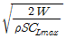
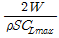
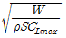
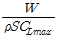
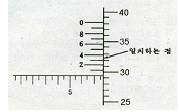
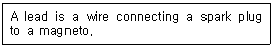
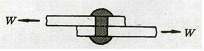
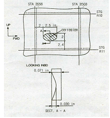

항공기체정비기능사 (2010-03-28 기출문제)
1과목: 비행원리
1. 베르누이의 정리에 따른 압력에 대한 설명으로 옳은 것은?
- 전압이 일정하다.
- 정압이 일정하다.
- 동압이 일정하다.
- 전압과 동압의 합이 일정하다.
(정답률: 76%)

2. 날개면적이 80m2 이고 날개뿌리 시위가 5m, 평균공력시위가 4m 인 테이퍼 날개에서의 가로세로비는 얼마인가?
- 4
- 5
- 16
- 20
(정답률: 45%)
3. 다음 중 비행기의 정적세로안정을 좋게 하기 위한 설명으로 틀린 것은?
- 꼬리날개 효율이 클수록 좋아진다.
- 꼬리날개 면적을 작게 할 때 좋아진다.
- 날개가 무게중심보다 높은 위치에 있을 때 좋아진다.
- 무게중심이 날개의 공기 역학적 중심보다 앞에 위치할수록 좋아진다.
(정답률: 72%)
4. 수평비행하는 비행기가 받음각이 일정한 상태에서 고도가 높아지면 일반적으로 속도와 필요마력은 각각 어떻게 되는가?
- 속도와 필요마력 모두 감소
- 속도와 필요마력 모두 증가
- 속도는 증가, 필요마력은 감소
- 속도는 감소, 필요마력은 증가
(정답률: 55%)
5. 단발프로펠러 비행기의 프로펠러 회전방향이 항공기 뒤쪽에서 보아 시계방향으로 회전한다. 이 비행기가 상승하려할 때, 프로펠러의 자이로모멘트에 의해 비행기는 어느 쪽으로 회전하려는 특성을 갖는가?
- 위쪽
- 아래쪽
- 오른쪽
- 왼쪽
(정답률: 67%)
6. 무게가 5000kgf 인 비행기가 경사각 30°로 정상선회를 할 때, 이 비행기의 원심력은 약 몇 kgf인가?
- 1886
- 2887
- 3887
- 4887
(정답률: 67%)
7. 헬리콥터의 한 종류로 회전날개를 비행방향을 기준으로 좌・우에 배치한 형태이며 가로안정이 가장 좋은 것은?
- 단일 회전날개 헬리콥터
- 동축 회전날개 헬리콥터
- 병렬식 회전날개 헬리콥터
- 직렬식 회전날개 헬리콥터
(정답률: 79%)
8. 다음 중 최대 양력계수를 크게 하기 위한 장치가 아닌 것은?
- 슬롯(Slot)
- 크루거 플랩(Kruger flap)
- 에어스포일러(Air spoiler)
- 드루프 플랩(Droop flap)
(정답률: 78%)
9. 다음 중 동일한 높이의 고도에서 대기 밀도에 대한 설명으로 가장 옳은 것은?
- 대기압과 온도가 낮을수록 커진다.
- 대기압과 온도가 높을수록 커진다.
- 대기압이 낮을수록, 온도가 높을수록 커진다.
- 대기압이 높을수록, 온도가 낮을수록 커진다.
(정답률: 53%)
10. 비행기가 정상 수평비행 상태에서 받음각을 증가시킬 때 비행기의 속도에 대한 설명으로 옳은 것은? (단, 받음각은 실속각의 범위 내에서 증가시키는 것으로 한다.)
- 양력이 증가하므로 속도는 증가한다.
- 양력계수가 증가하고 속도는 감소한다.
- 속도는 받음각의 증가 여부에 관계없이 일정하게 유지된다.
- 받음각이 실속각 이내에서 증가하면 속도는 감소하지 않는다.
(정답률: 58%)
11. 헬리콥터 회전익의 피치각을 가장 옳게 나타낸 것은?
- 상대풍과 회전면이 이루는 각도
- 익형의 시위선과 상대풍이 이루는 각도
- 회전깃 시위선과 상대풍이 이루는 각도
- 회전깃 시위선과 기준면이 이루는 각도
(정답률: 47%)
12. 주날개 및 기체 일부에서 발생한 와류에 의해 날개에 이상 진동이 발생하는 현상은?
- 시미(Shimmy)
- 더치롤(Dutch roll)
- 턱언더(Tuck under)
- 버피팅(Buffeting)
(정답률: 74%)
13. 비행기의 실속속도를 구하는 식으로 옳은 것은? (단, W 항공기 무게, ρ 공기의 밀도, S 날개의 면적, Clmax 최대양력계수 이다.)




(정답률: 78%)
14. 날개의 시위 길이가 5m, 공기의 흐름 속도가 360km/h, 공기의 밀도는 1.21 kg/m3 , 점성계수 18.1×10-6Nㆍs/m2가 일 때 레이놀즈수는 약 얼마인가?
- 2×107
- 2×109
- 3×107
- 3×109
(정답률: 51%)
15. 비행기의 안정성 및 조종성의 관계에 대한 설명으로 틀린 것은?
- 안정성이 클수록 조종성은 증가된다.
- 안정성과 조종성은 서로 상반되는 성질을 나타낸다.
- 안정성과 조종성 사이에는 적절한 조화를 유지하는 것이 필요하다.
- 안정성이 작아지면 조종성은 증가되나, 평형을 유지시키기 위해 조종사에게 계속적인 주의를 요한다.
(정답률: 67%)
16. 튜브 밴딩시 성형선(Mold line)이란 무엇인가?
- 밴딩한 재료의 평균 중심선
- 밴딩 축을 중심으로 한 밴딩 반지름
- 밴딩한 재료의 바깥쪽에서 연장한 직선
- 재료의 안쪽선과 밴딩 축을 중심으로한 원과의 접선
(정답률: 68%)
17. 공구의 물림턱에 로크장치(잠금장치)가 되어 있어 부러진 스터드나 꼭 끼인 핀 등을 빼낼 때에 사용이 유용한 공구는?
- 콤비네이션 플라이어
- 바이스 그립 플라이어
- 커넥터 플라이어
- 워터펌프 플라이어
(정답률: 67%)
18. 최소 측정값이 1/1000mm 인 마이크로미터의 아래 그림이 지시하는 측정값은 몇 mm 인가?

- 7.793
- 7.773
- 7.753
- 7.733
(정답률: 61%)
19. 정비지원 업무의 조직 중 기술관리 업무의 조직에 대하여 설명한 것은?
- 정비의 품질을 유지, 관리하는 조직이다.
- 기술 자료의 관리와 정비규정의 작성 등을 담당하는 조직이다.
- 정비 작업 통제 및 항공기 운용 업무를 담당하는 조직이다.
- 정비 인력과 정비 지원 장비 등을 운용하는 조직이다.
(정답률: 67%)
20. 충돌, 추락, 전복 및 이와 유사한 사고의 위험이 있는 장비 및 시설물에 표시하는 색채는?
- 빨간색
- 파란색
- 노란색
- 주황색
(정답률: 67%)
2과목: 항공기정비
21. 포말 소화기는 어떤 소화방법에 해당하는가?
- 억제소화방법
- 질식소화방법
- 빙결소화방법
- 희석소화방법
(정답률: 85%)
22. 다음 영문의 내용을 옳게 번역한 것은?

- 점화 플러그는 마그네토에 포함된다.
- 마그네토는 점화 플러그에 의해 작동된다.
- 도선은 점화 플러그와 마그네토를 연결하는 선이다.
- 처음 작동의 연결은 축전지와 마그네토 플러그에 연결된 도선에 의한다.
(정답률: 78%)
23. 다음 중 작업 감독자의 책임이 아닌 것은?
- 작업자의 작업상태 점검
- 시설, 장비 및 환경의 투자
- 각종 재해에 대한 예방 조치
- 작업절차, 장비와 기기의 취급에 대한 교육 실시
(정답률: 86%)
24. 복선식 안전결선 작업에서 고정 작업을 해야 할 부품이 4~6in 의 넓은 간격으로 떨어져 있을 때, 연속적으로 고정할 수 있는 부품의 수는 최대 몇 개로 제한되어 있는가?
- 2
- 3
- 4
- 5
(정답률: 70%)
25. 항공기 견인 차량으로 항공기 견인시 제한 속도는?
- 최대 5km/h 이다.
- 최대 8km/h 이다.
- 최대 10km/h 이다.
- 최대 15km/h 이다.
(정답률: 74%)
26. 황목, 중목, 세목으로 나누는 줄(File)의 분류방법의 기준은?
- 줄눈의 크기
- 줄의 길이
- 단면의 모양
- 줄날의 방식
(정답률: 62%)
27. 다음 중 신뢰성 정비 방식이 채택될 수 있는 여건으로 가장 거리가 먼 것은?
- 정비인력의 증가
- 항공기 설계개념의 진보
- 항공기 기자재의 품질수준 향상
- 비파괴 검사방법 등에 의한 검사법 발전
(정답률: 82%)
28. AN21 ~ AN36 으로 분류되고, 머리 형태가 둥글고 스크루 드라이버를 사용하도록 머리에 홈이 파여 있는 모양의 볼트는?
- 아이 볼트
- 클레비스 볼트
- 육각 볼트
- 인터널 렌칭 볼트
(정답률: 69%)
29. 항공기의 알칼리 세척법에 대한 설명이 아닌 것은?
- 독성이 없다.
- 인화성이 없다.
- 추운 날씨에 적합하다.
- 페인트를 칠한 표면이 변색되지 않는다.
(정답률: 77%)
30. 다음 중 육안검사로 발견 할 수 없는 결함은?
- 찍힘(Nick)
- 응력(Stress)
- 부식(Corrosion)
- 소손(Burning)
(정답률: 81%)
31. 재질에 관계없이 모든 부품에 적용할 수 있으며, 특히 표면결함 검사가 용이한 검사 방법은?
- 자분탐상검사
- 형광침투탐상검사
- 초음파탐상검사
- 방사성 동위원소검사
(정답률: 68%)
32. 알루미늄 합금의 부식을 방지하는 표면 처리 방법이 아닌 것은?
- 양극 처리
- 쇼트 피닝 처리
- 알로다인 처리
- 인산염 피막 처리
(정답률: 59%)
33. 한쪽 또는 양쪽이 평평한 면의 금속으로 이루어져 판재를 고르게 펼 때 사용할 수 있는 해머는?(오류 신고가 접수된 문제입니다. 반드시 정답과 해설을 확인하시기 바랍니다.)
- 클로(Claw)해머
- 맬릿(Mallet)해머
- 보디(Body)해머
- 볼핀(Ball peen)해머
(정답률: 48%)
34. “감항성은 항공기가 비행에 적합한 안전성 및 신뢰성이 있는지의 여부를 말하는 것이다.”에서 밑줄 친 감항성을 영어로 옳게 표시한 것은?
- Maintenance
- Comfortability
- Inspection
- Airworthiness
(정답률: 64%)
35. 정비 작업 중 기체의 개조에 해당하지 않는 것은?
- 날개 형태의 변경
- 윤활유 및 연료 변경
- 중량 및 중심 한계의 변경
- 항공기 표피 및 조종 능력의 변경
(정답률: 82%)
36. 헬리콥터의 주회전날개 깃의 피치각이 같을 때 양력의 불균형으로 인해 회전날개가 위아래로 움직이는 현상을 무엇이라 하는가?
- 플래핑 운동
- 코리올리스 효과
- 페더링 효과
- 리드 - 래그 운동
(정답률: 75%)
37. 항공기에서 비금속 재료가 쓰이는 곳이 아닌 것은?
- 안전결선
- 항공기 타이어
- 전선 피복제
- 객실 창문 유리
(정답률: 74%)
38. 구조재료 중 FRP에 대한 설명으로 틀린 것은?
- 진동에 대한 감쇠성이 적다.
- 경도 및 강성이 낮은 것에 비해 강도비가 크다.
- 2차구조나 1차구조에 적층재나 샌드위치 구조재로 사용된다.
- Fiber Reinforced Plastic(섬유강화 플라스틱)의 약어이다.
(정답률: 52%)
39. 다음 중 헬리콥터의 동력전달계통에 속하지 않는 것은?
- 변속기
- 오버러닝 클러치
- 자이로신
- 회전날개 구동축
(정답률: 74%)
40. 조종용 케이블에 터미널 피팅을 연결하는 방법으로 케이블의 강도를 약 100% 유지하며, 피팅의 금속에 케이블을 넣고 큰 힘을 가하여 찌그러 트려 연결하는 방법은?
- 스웨이징(Swaging)
- 니코프레스(Nicopress)
- 랩-솔더 케이블(Wrap-solder cable splice)
- 5권식 케이블 연결(5-tuck woven cable splice)
(정답률: 54%)
3과목: 항공기체
41. 일정한 응력을 받는 재료가 일정한 온도에서 시간이 경과함에 따라 하중이 일정하더라도 변형율이 변화하는 현상을 무엇이라 하는가?
- 피로
- 크리프
- 좌굴
- 피로한도
(정답률: 62%)
42. 그림과 같이 두 판재가 200kgf 의 인장력을 받을 때, 그 사이의 리벳의 단면에 작용하는 전단 응력의 크기는 몇 kgf/cm2인가?(단, 리벳의 단면적은 2cm2이다.)

- 0.01
- 100
- 200
- 400
(정답률: 68%)
43. 철(Fe)과 탄소(C)로 된 합금으로, 0.025%~2.0%의 C를 함유하고 있는 것은?
- 순철
- 강
- 주철
- 알루미늄
(정답률: 58%)
44. 헬리콥터의 조종 장치 중 주 회전 날개 깃의 피치각을 동시에 증감시킴으로써 양력의 증감에 의해 헬리콥터를 상승 또는 하강하게 하는 조종 장치는?
- 플랩 레버(Flap lever)
- 주기 조종간(Cyclic control stick)
- 동시 피치 레버(Collective pitch lever)
- 방향 조종 페달(Directional control pedal)
(정답률: 79%)
45. 동체구조 중 세로대(Longeron)에 수평부재와 수직부재 및 대각선 부재 등으로 이루어진 구조가 하중의 대부분을 담당하는 형식은?
- 트러스형 동체
- 응력외피형 동체
- 모노코크형 동체
- 세미모노코크형 동체
(정답률: 51%)
46. 알루미늄 합금보다 비강도, 내식성이 좋으며 550℃까지 고온 성질이 우수하여 기관의 구조 부재로 사용되는 재질은?
- 청동합금
- Mg 합금
- 인코넬(Inconel)
- Ti 합금
(정답률: 67%)
47. 구조 부재에 작용하는 표면 하중(Surface load) 중 면에 균일하게 분포하여 작용하는 하중을 무엇이라 하는가?
- 점 하중
- 체적 하중
- 분포 하중
- 집중 하중
(정답률: 85%)
48. 다음 중 양쪽의 주바퀴 아래쪽 폭이 위쪽 폭보다 좁은 상태를 일컫는 용어는?
- 토인(Toe-in)
- 정(+)의 캠버(Camber)
- 토아웃(Toe-out)
- 부(-)의 캠버(Camber)\
(정답률: 55%)
49. 항공기 제작시 항공기 도면과 더불어 발행되는 도면관련문서가 아닌 것은?
- 적용목록
- 부품목록
- 비행목록
- 기술변경서
(정답률: 68%)
50. 기관마운트가 갖추어야 하는 특징이 아닌 것은?
- 수리 및 교환에 용이하여야 한다.
- 기관과 보기부의 검사 및 정비를 쉽게 할 수 있어야 한다.
- 기관의 진동이 기체에 전달되도록 견고해야 한다.
- 기체의 타 장비와 간섭이 되지 않도록 간단한 구조가 되어야 한다.
(정답률: 66%)
51. 로드를 이용한 조종계통에서 회전운동에 의해 직선운동의 방향을 바꿔 로드의 운동을 전달하는 기구는?
- 풀리(Pulley)
- 벨 크랭크(Bell crank)
- 조종로크(control rock)
- 푸시풀 로드(Push pull rod)
(정답률: 44%)
52. 헬리콥터의 테일붐에 있는 구조로 회전날개에서 발생하는 토크를 상쇄시키는데 기여하며 위쪽과 아래쪽의 대칭구조를 갖고 있는 것은?
- 힌지(Hinge)
- 수직 핀(Vertical fin)
- 스키드 기어(Skid gear)
- 회전 날개 보호대(Tail rotor guard)
(정답률: 67%)
53. 미국재료시험협회(ASTM)에서 정한 질별기호 중 풀림처리를 나타내는 기호는?
- O
- H
- F
- W
(정답률: 76%)
54. 다음 중 헬리콥터의 동체구조 형식이 아닌 것은?
- 트러스형 구조
- 모노코크형 구조
- 테일콘형 구조
- 세미모노코크형 구조
(정답률: 81%)
55. 한계하중(비행 중 가장 심한 하중), 즉 극한하중의 조건에서 기체의 구조에 대한 충분한 강도와 강성을 시험하는 것은?
- 피로 시험
- 정하중 시험
- 낙하 시험
- 지상진동 시험
(정답률: 68%)
56. 항공기의 손상 상태를 도시한 다음 도면에 대한 설명으로 옳은 것은?

- 손상 부위의 깊이는 0.071 in 이다.
- 손상 부위의 장축길이는 2.5 in 이다.
- 손상 부위는 스테이션 10번과 11번 사이에 있다.
- 스트링어 3556번과 3503번 사이에 부식이 생겼다.
(정답률: 53%)
57. 꼬리날개에 대한 설명으로 옳은 것은?
- T형 꼬리날개는 날개후류의 영향을 받아서 성능이 좋아지고 무게경감에 도움을 준다.
- 수평안정판이 동체와 이루는 붙임각은 Down-wash를 고려하여 수평보다 조금 아랫방향으로 되어있다.
- 도살핀은 방향안정성 증가가 목적이지만 가로안정성 증가에도 도움을 준다.
- 꼬리날개는 큰 하중을 담당하지 않으므로 보통 리브와 스킨으로만 구성되어 있다.
(정답률: 74%)
58. 금속의 기계적 성질 중 물질이 탄성한계 이상의 힘을 받아도 부서지지 않고 가늘게 길어나는 성질은?
- 인성
- 전성
- 취성
- 연성
(정답률: 59%)
59. 안전여유(Margin of safety)를 구하는 식으로 옳은 것은?
- 허용하중/실제하중 - 1
- 실제하중/허용하중 -1
- 허용하중/실제하중 +1
- 실제하중/허용하중 +1
(정답률: 47%)
60. 다음 중 날개의 구조 부재가 아닌 것은?
- 외피
- 스트링어
- 날개보
- 토크칼라
(정답률: 88%)